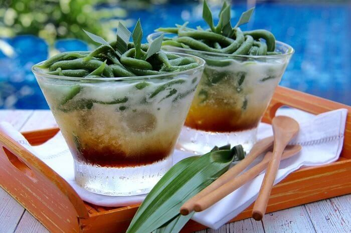

Resep Es cendol segar

Bahan-Bahan:
- Tepung beras, 100 gram
- Tepung sagu, 25 gram
- Air, 650 ml
- Air suji, 50 ml (dari 2 lembar daun pandan dan 30 lembar daun suji)
- Garam, 1 sendok teh
- Pewarna hijau tua, 2 tetes
Bahan sirop :- Gula merah, 200 gram (sisir halus)
- Air, 150 ml
- Daun pandan, 2 lembar
- Garam, ¼ sendok teh
- Buah nangka, 25 gram (potong 1×1 cm)
Bahan kuah santan :- Santan, 400 ml ( dari ½ butir kelapa )
- Garam, ½ sendok teh
- Daun pandan, 2 lembar
Bahan pelengkap :- Es serut, 500 gram
Langkah-Langkah:
- Langkah 1
- Langkah pertama buah bahan cendol : larutkan tepung beras, tepung sagu, garam, air dan air suji dan pewarna hijau tua
- Langkah 2
- Setelah semua bahan larut, lalu masak campuran tersebut sampai meletup-letup dan adonan kalis. Angkat dan seger tuangkan ke dalam cetakan cendol. Tekan di atas wadah yang berisi air es sambil di goyang-goyangkan, lalu saring cendol.
- Langkah 3
- Langkah kedua buat bahan sirop : rebus gula merah, air, daun pandan, garam dan potongan nangka diatas api kecil sambil terus diaduk sampai kental. Angkat dan sisihkan.
Langkah 4- Langkah ketiga buah bahan santan : masak santan, garam dan daun pandan sambil terus diaduk sampai mendidih. Angkat dan dinginkan.
Langkah 5- Langkah akhir sajikan cendol bersama sirop, kuah santan dan es